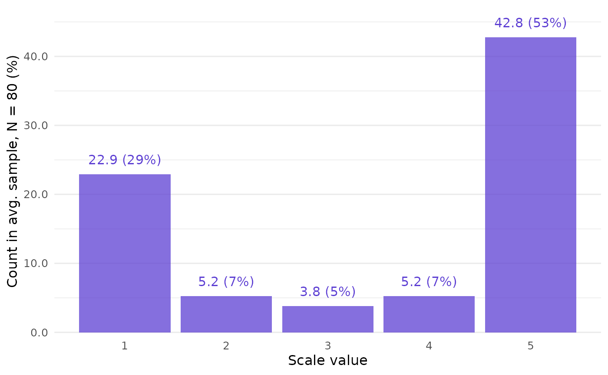
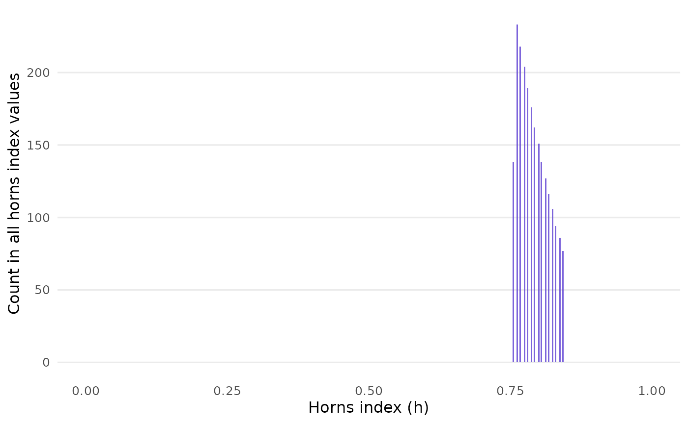

Here is a brief walkthrough of using CLOSURE in unsum.
Call closure_generate() to run the CLOSURE algorithm.
Enter mean, SD, and sample size that you read in a paper. For
scale_min and scale_max, use the empirical
minimum and maximum if available. Otherwise, use the more fundamental
scale bounds, e.g., 1 and 7 for a 1-7
scale.
The mean and sd arguments must be strings
to preserve trailing zeros. Note that CLOSURE can only be used if the
values must be integers: e.g., a value can be 2 or 3, but not 2.5.
data <- closure_generate(
mean = "3.5",
sd = "1.8",
n = 80,
scale_min = 1,
scale_max = 5
)First create a plot of the mean sample found by CLOSURE. This gives us a sense of the overall results, which are quite polarized:
closure_plot_bar(data)
You can customize the plot, e.g., to show the sum of all samples
found instead of the average sample, or only percentages, or different
colors. See documentation at closure_plot_bar(). However,
the default should be informative enough for a start.
CLOSURE results
Now let’s look at the results themselves:
data
#> $inputs
#> # A tibble: 1 × 7
#> mean sd n scale_min scale_max rounding threshold
#> <chr> <chr> <dbl> <dbl> <dbl> <chr> <dbl>
#> 1 3.5 1.8 80 1 5 up_or_down 5
#>
#> $metrics
#> # A tibble: 1 × 5
#> samples_initial samples_all values_all horns horns_uniform
#> <int> <int> <int> <dbl> <dbl>
#> 1 15 2215 177200 0.792 0.5
#>
#> $frequency
#> # A tibble: 5 × 4
#> value f_average f_absolute f_relative
#> <int> <dbl> <int> <dbl>
#> 1 1 22.9 50778 0.287
#> 2 2 5.24 11598 0.0655
#> 3 3 3.81 8439 0.0476
#> 4 4 5.24 11609 0.0655
#> 5 5 42.8 94776 0.535
#>
#> $results
#> # A tibble: 2,215 × 2
#> id sample
#> <int> <list>
#> 1 1 <int [80]>
#> 2 2 <int [80]>
#> 3 3 <int [80]>
#> 4 4 <int [80]>
#> 5 5 <int [80]>
#> 6 6 <int [80]>
#> 7 7 <int [80]>
#> 8 8 <int [80]>
#> 9 9 <int [80]>
#> 10 10 <int [80]>
#> # ℹ 2,205 more rowsinputsrecords the arguments inclosure_generate().-
metricsshows the number of possible samples that could have led to the reported summary statistics (samples_all) and the total number of all values found in them (values_all).Importantly, it also features an index of variation in bounded scales (
horns). It ranges from 0 to 1, where 0 means no variability and 1 would be a sample evenly split between the extremes — here, 1, and 5 — with no values in between. The reference valuehorns_uniformshows which valuehornswould have if the mean sample was uniformly distributed. This is 0.5 because of the 1-5 scale. Seehorns()for more details.The actual
hornsvalue is 0.79, which is a high degree of variability even in the abstract. However, in practice, 0.79 might be extremely high compared to theoretical expectations: if the sample should have a roughly normal shape, even the hypothetical 0.5 uniform value would be surprisingly high, let alone the 0.79 actual value. frequencyshows the absolute and relative frequencies of values found by CLOSURE at each scale point. It also gives us the (absolute) frequency of values in the average sample that we saw in the plot above.resultsstores all the samples that CLOSURE found (sample). Each has a unique number (id).
See closure_generate() for more details.
In addition to the bar plot, unsum offers an ECDF plot for CLOSURE results:
closure_plot_ecdf(data)
Horns index variation
You may wonder about variability between the samples. Couldn’t there
be some with a much lower or higher horns index than the overall mean
horns? In this case, there would be a chance that the
original data looked quite different from the average. Check this using
closure_horns_analyze():
data_horns <- closure_horns_analyze(data)
data_horns
#> $closure_generate_inputs
#> # A tibble: 1 × 7
#> mean sd n scale_min scale_max rounding threshold
#> <chr> <chr> <dbl> <dbl> <dbl> <chr> <dbl>
#> 1 3.5 1.8 80 1 5 up_or_down 5
#>
#> $horns_metrics
#> # A tibble: 1 × 9
#> mean uniform sd cv mad min median max range
#> <dbl> <dbl> <dbl> <dbl> <dbl> <dbl> <dbl> <dbl> <dbl>
#> 1 0.792 0.5 0.0251 0.0317 0.0189 0.756 0.787 0.844 0.0877
#>
#> $horns_results
#> # A tibble: 2,215 × 2
#> id horns
#> <int> <dbl>
#> 1 1 0.762
#> 2 2 0.756
#> 3 3 0.756
#> 4 4 0.762
#> 5 5 0.756
#> 6 6 0.762
#> 7 7 0.762
#> 8 8 0.762
#> 9 9 0.756
#> 10 10 0.756
#> # ℹ 2,205 more rowsAlso, closure_horns_histogram() visualizes the
distribution of horns values across all samples:
closure_horns_histogram(data_horns)
In sum, the horns values are quite tightly confined. Wide variation
among them seems to occur only if mean and sd
have no decimal places.
Read and write
What if you have a huge object with CLOSURE results that you want to
save? Write it to disk with closure_write():
# Using a temporary folder via `tempdir()` just for this example --
# you should use a real folder on your computer instead!
path_new_folder <- closure_write(data, path = tempdir())
#> ✔ All files written to:
#> /tmp/Rtmp6nUBud/CLOSURE-3_5-1_8-80-1-5-up_or_down-5/This stores the results using the highly efficient Parquet format. It will only take a tiny fraction of a CSV file’s disk space.
In your later session, read the data in from the folder to get the same CLOSURE list back:
data_new <- closure_read(path_new_folder)A caveat: don’t modify the output of closure_generate()
before passing it into other closure_*() functions. The
latter need input with a very specific format, and if you manipulate the
data between two closure_*() calls, these assumptions may
no longer hold. Some checks are in place to detect alterations, but they
may not catch all of them.